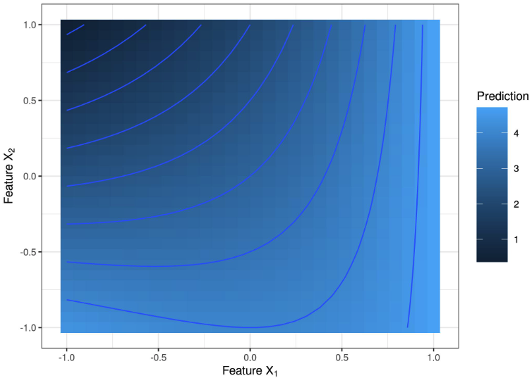
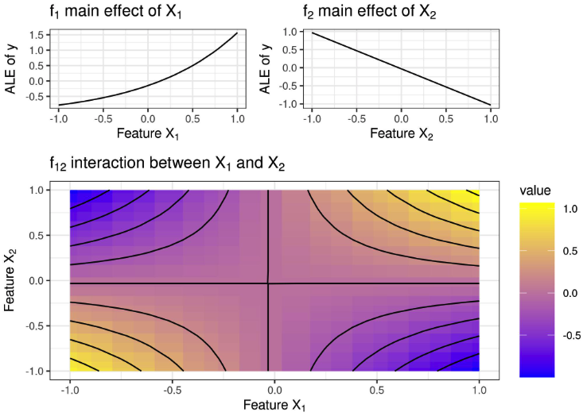

En cours de traduction.
8.4 - Functional Decomposition
Un modèle d’apprentissage automatique supervisé peut être considéré comme une fonction qui prend un vecteur de caractéristiques de grande dimension en entrée et produit un score de prédiction ou de classification en sortie. La décomposition fonctionnelle est une technique d’interprétation qui déconstruit la fonction de grande dimension et l’exprime comme une somme d’effets de caractéristiques individuelles et d’effets d’interaction pouvant être visualisés. De plus, la décomposition fonctionnelle est un principe fondamental qui sous-tend de nombreuses techniques d’interprétation : elle vous aide à mieux comprendre les autres méthodes d’interprétation.
Allons droit au but et examinons une fonction particulière. Cette fonction prend deux fonctionnalités en entrée et produit une sortie unidimensionnelle :
\[y = \hat{f}(x_1, x_2) = 2 + e^{x_1} - x_2 + x_1 \cdot x_2\]
Considérez la fonction comme un modèle d’apprentissage automatique. Nous pouvons visualiser la fonction avec un tracé 3D ou une carte thermique avec des courbes de niveau :

La fonction prend de grandes valeurs lorsque \(x_1\) est grand et \(x_2\) est petit, et il faut de petites valeurs pour de grandes \(x_2\) et petit \(x_1\). La fonction de prédiction n’est pas simplement un effet additif entre les deux caractéristiques, mais une interaction entre les deux. La présence d’une interaction est visible sur la figure - l’effet de la modification des valeurs de la fonctionnalité \(x_1\) dépend de la valeur de cette fonctionnalité \(x_2\) a.
Notre travail consiste maintenant à décomposer cette fonction en effets principaux de fonctionnalités \(x_1\) et \(x_2\) et un terme d’interaction. Pour une fonction bidimensionnelle \(\hat{f}\), cela dépend de seulement deux fonctionnalités d’entrée : \(\hat{f}(x_1, x_2)\), nous voulons que chaque composant représente un effet principal (\(\hat{f}_1\) et \(\hat{f}_2\)), interaction (\(\hat{f}_{1,2}\)) ou intercepter (\(\hat{f}_0\)):
\[\hat{f}(x_1, x_2) = \hat{f}_0 + \hat{f}_1(x_1) + \hat{f}_2(x_2) + \hat{f}_{1,2}(x_{1},x_{2})\]
Les principaux effets indiquent comment chaque caractéristique affecte la prédiction, indépendamment des valeurs de l’autre caractéristique. L’effet d’interaction indique l’effet conjoint des caractéristiques. L’interception nous indique simplement quelle est la prédiction lorsque tous les effets de caractéristiques sont définis sur zéro. Notez que les composants eux-mêmes sont des fonctions (à l’exception de l’interception) avec une dimensionnalité d’entrée différente.

Pensez-vous que les composants ont du sens étant donné la vraie formule ci-dessus, en ignorant le fait que la valeur d’origine semble un peu aléatoire ? Le \(x_1\) la fonctionnalité montre un effet principal exponentiel, et \(x_2\) montre un effet linéaire négatif. Le terme d’interaction ressemble un peu à une puce Pringles. En termes moins croustillants et plus mathématiques, il s’agit d’un paraboloïde hyperbolique, comme on pourrait s’y attendre pour \(x_1 \cdot x_2\). Alerte dévulgachage : la décomposition est basée sur des tracés d’effets locaux accumulés, dont nous parlerons plus tard dans le chapitre.
8.4.2 - Décomposition fonctionnelle
Une fonction de prédiction prend \(p\) fonctionnalités en entrée, \(\hat{f}: \mathbb{R}^p \mapsto \mathbb{R}\) et produit une sortie. Cela peut être une fonction de régression, mais cela peut aussi être la probabilité de classification pour une classe donnée ou le score pour un cluster donné (apprentissage automatique non supervisé). Entièrement décomposée, nous pouvons représenter la fonction de prédiction comme la somme de composants fonctionnels :
\[\begin{align*} \hat{f}(x) = & \hat{f}_0 + \hat{f}_1(x_1) + \ldots + \hat{f}_p(x_p) \\ & + \hat{f}_{1,2}(x_1, x_2) + \ldots + \hat{f}_{1,p}(x_1, x_p) + \ldots + \hat{f}_{p-1,p}(x_{p-1}, x_p) \\ & + \ldots \\ & + \hat{f}_{1,\ldots,p}(x_1, \ldots, x_p) \end{align*}\]
Nous pouvons rendre la formule de décomposition un peu plus agréable en indexant tous les sous-ensembles possibles de combinaisons de fonctionnalités : \(S\subseteq\{1,\ldots,p\}\). Cet ensemble contient l’interception (\(S=\emptyset\)), principaux effets (\(|S|=1\)), et toutes les interactions (\(|S|\geq{}1\)). Avec ce sous-ensemble défini, nous pouvons écrire la décomposition comme suit :
\[\hat{f}(x) = \sum_{S\subseteq\{1,\ldots,p\}} \hat{f}_S(x_S)\]
Dans la formule, \(x_S\) est le vecteur des caractéristiques dans l’ensemble d’index \(S\). Et chaque sous-ensemble \(S\) représente un composant fonctionnel, par exemple un effet principal si S ne contient qu’une seule fonctionnalité, ou une interaction si \(|S| > 1\).
Combien de composants y a-t-il dans la formule ci-dessus ? La réponse se résume au nombre de sous-ensembles possibles \(S\) des fonctionnalités \(1,\ldots, p\) nous pouvons former. Et ce sont \(\sum_{i=0}^p\binom{p}{i}=2^p\) sous-ensembles possibles ! Par exemple, si une fonction utilise 10 fonctionnalités, nous pouvons décomposer la fonction en 1042 composants : 1 intercept, 10 effets principaux, 90 termes d’interaction à 2 voies, 720 termes d’interaction à 3 voies, … Et avec chaque fonctionnalité supplémentaire, le nombre de composants double. De toute évidence, pour la plupart des fonctions, il n’est pas possible de calculer toutes les composantes. Une autre raison de NE PAS calculer toutes les composantes est que les composantes avec \(|S|>2\) sont difficiles à visualiser et à interpréter.
8.4.3 - Comment ne pas calculer les composantes II
Jusqu’à présent, j’ai évité de parler de la façon dont les composants sont définis et calculés. Les seules contraintes dont nous avons implicitement parlé étaient le nombre et la dimensionnalité des composants, et le fait que la somme des composants devait produire la fonction d’origine. Mais sans autres contraintes sur ce que devraient être les composants, ils ne sont pas uniques. Cela signifie que nous pourrions déplacer les effets entre les effets principaux et les interactions, ou entre les interactions d’ordre inférieur (peu de fonctionnalités) et les interactions d’ordre supérieur (plus de fonctionnalités). Dans l’exemple du début du chapitre, nous pourrions mettre les deux effets principaux à zéro et ajouter leurs effets à l’effet d’interaction.
Voici un exemple encore plus extrême qui illustre la nécessité de contraintes sur les composants. Supposons que vous ayez une fonction tridimensionnelle. L’apparence de cette fonction n’a pas vraiment d’importance, mais la décomposition suivante fonctionnerait toujours : \(\hat{f}_0\) is 0.12. \(\hat{f}_1(x_1)=2\cdot{}x_1\) + nombre de chaussures que vous possédez. \(\hat{f}_2\), \(\hat{f}_3\), \(\hat{f}_{1,2}\), \(\hat{f}_{2,3}, \hat{f}_{1,3}\) sont tous nuls. Et pour que cette astuce fonctionne, je définis \(\hat{f}_{1,2,3}(x_1,x_2,x_3)=\hat{f}(x)-\sum_{S\subset\{1,\ldots,p\}}\hat{f}_S(x_S)\). Ainsi, le terme d’interaction contenant toutes les caractéristiques aspire simplement tous les effets restants, ce qui, par définition, fonctionne toujours, dans le sens où la somme de toutes les composantes nous donne la fonction de prédiction originale. Cette décomposition ne serait pas très significative et assez trompeuse si vous deviez la présenter comme l’interprétation de votre modèle.
L’ambiguïté peut être évitée en spécifiant des contraintes supplémentaires ou des méthodes spécifiques de calcul des composants. Dans ce chapitre, nous aborderons trois méthodes qui abordent la décomposition fonctionnelle de différentes manières : - ANOVA fonctionnelle (généralisée) - Effets locaux accumulés - Modèles de régression statistique
8.4.4 - ANOVA fonctionnelle
L’ANOVA fonctionnelle a été proposée par Hooker (2004)1. Une condition requise pour cette approche est que la fonction de prédiction du modèle \(\hat{f}\) est carré intégrable. Comme pour toute décomposition fonctionnelle, l’ANOVA fonctionnelle décompose la fonction en composants :
\[\hat{f}(x) = \sum_{S\subseteq\{1,\ldots,p\}} \hat{f}_S(x_S)\]
Hooker (2004) définit chaque composant avec la formule suivante :
\[\hat{f}_S(x) = \int_{X_{-S}} \left( \hat{f}(x) - \sum_{V \subset S} \hat{f}_V(x)\right) d X_{-S}\]
D’accord, démontons cette chose. Nous pouvons réécrire le composant comme suit :
\[\hat{f}_S(x) = \int_{X_{-S}} \left( \hat{f}(x)\right) d X_{-S} - \int_{X_{-S}} \left(\sum_{V \subset S} \hat{f}_V(x) \right) d X_{-S}\]
Sur le côté gauche se trouve l’intégrale sur la fonction de prédiction par rapport aux caractéristiques exclues de l’ensemble \(S\), noté par \(-S\). Par exemple, si nous calculons la composante d’interaction bidirectionnelle pour les caractéristiques 2 et 3, nous intégrerions les caractéristiques 1, 4, 5,… L’intégrale peut également être considérée comme la valeur attendue de la fonction de prédiction par rapport à \(X_{-S}\), en supposant que toutes les caractéristiques suivent une distribution uniforme de leur minimum à leur maximum. De cet intervalle, nous soustrayons toutes les composantes avec des sous-ensembles de \(S\). Cette soustraction supprime l’effet de tous les effets d’ordre inférieur et centre l’effet. Pour \(S=\{1,2\}\), nous soustrayons les principaux effets des deux caractéristiques \(\hat{f}_1\) eT \(\hat{f}_2\), ainsi que l’interception \(\hat{f}_0\). L’apparition de ces effets d’ordre inférieur rend la formule récursive : nous devons parcourir la hiérarchie des sous-ensembles pour intercepter et calculer toutes ces composantes. Pour le composant d’interception \(\hat{f}_0\), le sous-ensemble est l’ensemble vide \(S=\{\emptyset\}\) et donc \(-S\) contient toutes les fonctionnalités :
\[\hat{f}_0(x) = \int_{X} \hat{f}(x) dX\]
Il s’agit simplement de la fonction de prédiction intégrée sur toutes les fonctionnalités. L’ordonnée à l’origine peut également être interprétée comme l’attente de la fonction de prédiction lorsque nous supposons que toutes les caractéristiques sont uniformément distribuées. Maintenant que nous savons \(\hat{f}_0\), on peut calculer \(\hat{f}_1\) (et de manière équivalente \(\hat{f}_2\)) :
\[\hat{f}_1(x) = \int_{X_{-1}} \left( \hat{f}(x) - \hat{f}_0\right) d X_{-S}\]
Pour terminer le calcul du composant \(\hat{f}_{1,2}\), nous pouvons tout assembler :
\[\begin{align*}\hat{f}_{1,2}(x) &= \int_{X_{3,4}} \left( \hat{f}(x) - (\hat{f}_0(x) + \hat{f}_1(x) - \hat{f}_0 + \hat{f}_2(x) - \hat{f}_0)\right) d X_{3},X_4 \\ &= \int_{X_{3,4}} \left(\hat{f}(x) - \hat{f}_1(x) - \hat{f}_2(x) + \hat{f}_0\right) d X_{3},X_4 \end{align*}\]
Cet exemple montre comment chaque effet d’ordre supérieur est défini en intégrant toutes les autres fonctionnalités, mais également en supprimant tous les effets d’ordre inférieur qui sont des sous-ensembles de l’ensemble de fonctionnalités qui nous intéresse.
Hooker (2004) a montré que cette définition des composants fonctionnels satisfait ces axiomes souhaitables :
- Zéro signifie : \(\int{}\hat{f}_S(x_S)dX_s=0\) pour chaque \(S\neq\emptyset\).
- Orthogonalité : \(\int{}\hat{f}_S(x_S)\hat{f}_V(x_v)dX=0\) pour \(S\neq{}V\).
- Décomposition de la variance : Soit \(\sigma^2_{\hat{f}}=\int \hat{f}(x)^2dX\), alors \(\sigma^2(\hat{f}) = \sum_{S \subseteq \{1,\ldots,p\}} \sigma^2_S(\hat{f}_S)\).
L’axiome des moyens zéro implique que tous les effets ou interactions sont centrés autour de zéro. En conséquence, l’interprétation à une position x est relative à la prédiction centrée et non à la prédiction absolue.
L’axiome d’orthogonalité implique que les composants ne partagent pas d’informations. Par exemple, l’effet de premier ordre de la fonctionnalité \(X_1\) et le terme d’interaction de \(X_1\) et \(X_2\) ne sont pas corrélées. En raison de l’orthogonalité, toutes les composantes sont « pures » dans le sens où elles ne mélangent pas les effets. Il est tout à fait logique que le composant destiné, par exemple, à la fonctionnalité \(X_4\) devrait être indépendant du terme d’interaction entre les fonctionnalités \(X_1\) et \(X_2\). La conséquence la plus intéressante concerne l’orthogonalité des composants hiérarchiques, où un composant contient des caractéristiques d’un autre, par exemple l’interaction entre \(X_1\) et \(X_2\) , et l’effet principal de la fonctionnalité \(X_1\). En revanche, un diagramme de dépendance partielle bidimensionnel pour \(X_1\) et \(X_2\) contiendrait quatre effets : l’interception, les deux effets principaux de \(X_1\) et \(X_2\) et l’interaction entre eux. Le composant ANOVA fonctionnel pour \(\hat{f}_{1,2}(x_1,x_2)\) ne contient que l’interaction pure.
La décomposition de la variance nous permet de diviser la variance de la fonction \(\hat{f}\) entre les composants, et garantit qu’il additionne finalement la variance totale de la fonction. La propriété de décomposition de la variance peut également nous expliquer pourquoi la méthode est appelée “ANOVA fonctionnelle”. En statistiques, ANOVA signifie ANalysis Of VAriance. L’ANOVA fait référence à un ensemble de méthodes qui analysent les différences dans la moyenne d’une variable cible. L’ANOVA fonctionne en divisant la variance et en l’attribuant aux variables. L’ANOVA fonctionnelle peut donc être considérée comme une extension de ce concept à n’importe quelle fonction.
Des problèmes surviennent avec l’ANOVA fonctionnelle lorsque les caractéristiques sont corrélées. Comme solution, l’ANOVA fonctionnelle généralisée a été proposée.
8.4.5 - ANOVA fonctionnelle généralisée pour les caractéristiques dépendantes
Semblable à la plupart des techniques d’interprétation basées sur des données d’échantillonnage (telles que le PDP), l’ANOVA fonctionnelle peut produire des résultats trompeurs lorsque les caractéristiques sont corrélées. Si nous intégrons sur la distribution uniforme, alors qu’en réalité les caractéristiques sont dépendantes, nous créons un nouvel ensemble de données qui s’écarte de la distribution conjointe et extrapole à des combinaisons improbables de valeurs de caractéristiques.
Hooker (2007) 2 a proposé l’ANOVA fonctionnelle généralisée, une décomposition qui fonctionne pour les caractéristiques dépendantes. Il s’agit d’une généralisation de l’ANOVA fonctionnelle que nous avons rencontrée précédemment, ce qui signifie que l’ANOVA fonctionnelle est un cas particulier de l’ANOVA fonctionnelle généralisée. Les composantes sont définies comme des projections de f sur l’espace des fonctions additives :
\[\hat{f}_S(x_S) = argmin_{g_S \in L^2(\mathbb{R}^S)_{S \in P}} \int \left(\hat{f}(x) - \sum_{S \subset P} g_S(x_S)\right)^2 w(x)dx.\]
Au lieu d’orthogonalité, les composants satisfont une condition d’orthogonalité hiérarchique :
\[\forall \hat{f}_S(x_S)| S \subset U: \int \hat{f}_S(x_S) \hat{f}_U(x_U) w(x)dx = 0\]
L’orthogonalité hiérarchique est différente de l’orthogonalité. Pour deux ensembles de caractéristiques S et U, dont aucun n’est le sous-ensemble de l’autre (par exemple \(S=\{1,2\}\) et \(U=\{2,3\}\)), les composants \(\hat{f}_S\) et \(\hat{f}_U\) n’ont pas besoin d’être orthogonaux pour que la décomposition soit hiérarchiquement orthogonale. Mais tous les composants de tous les sous-ensembles de \(S\) doit être orthogonal à \(\hat{f}_S\). En conséquence, l’interprétation diffère de manière pertinente : à l’instar du M-Plot du chapitre ALE, les composants fonctionnels généralisés de l’ANOVA peuvent emmêler les effets (marginaux) des caractéristiques corrélées. La question de savoir si les composantes enchevêtrent les effets marginaux dépend également du choix de la fonction de pondération \(w(x)\). Si nous choisissons w comme mesure uniforme sur le cube unité, nous obtenons l’ANOVA fonctionnelle à partir de la section ci-dessus. Un choix naturel pour w est la fonction de distribution de probabilité conjointe. Cependant, la distribution conjointe est généralement inconnue et difficile à estimer. Une astuce peut être de commencer par la mesure uniforme sur le cube unité et de découper les zones sans données.
L’estimation est effectuée sur une grille de points dans l’espace des caractéristiques et est présentée comme un problème de minimisation qui peut être résolu à l’aide de techniques de régression. Cependant, les composants ne peuvent pas être calculés individuellement, ni hiérarchiquement, mais un système complexe d’équations impliquant d’autres composants doit être résolu. Le calcul est donc assez complexe et gourmand en calcul.
8.4.6 - Graphiques des effets locaux accumulés
Les tracés ALE (Apley et Zhu 20203) fournissent également une décomposition fonctionnelle, ce qui signifie que l’ajout de tous les tracés ALE à l’origine, des tracés ALE 1D, des tracés ALE 2D, etc., donne la fonction de prédiction. L’ALE diffère de l’ANOVA fonctionnelle (généralisée), car les composantes ne sont pas orthogonales mais, comme l’appellent les auteurs, pseudo-orthogonales. Pour comprendre la pseudo-orthogonalité, il faut définir l’opérateur \(H_S\), qui prend une fonction \(\hat{f}\) et le mappe à son tracé ALE pour le sous-ensemble de fonctionnalités \(S\). Par exemple, l’opérateur \(H_{1,2}\) prend en entrée un modèle d’apprentissage automatique et produit le tracé ALE 2D pour les fonctionnalités 1 et 2 : \(H_{1,2}(\hat{f}) = \hat{f}_{ALE,12}\). Si nous appliquons deux fois le même opérateur, nous obtenons le même tracé ALE. Après avoir appliqué l’opérateur \(H_{1,2}\) à \(f\) une fois, nous obtenons le tracé ALE 2D \(\hat{f}_{ALE,12}\). Ensuite, nous appliquons à nouveau l’opérateur, non pas sur \(f\) mais sur \(\hat{f}_{ALE,12}\). Ceci est possible car le composant 2D ALE est lui-même une fonction. Le résultat est encore une fois \(\hat{f}_{ALE,12}\), ce qui signifie que nous pouvons appliquer le même opérateur plusieurs fois et obtenir toujours le même tracé ALE. C’est la première partie de la pseudo-orthogonalité. Mais quel est le résultat si nous appliquons deux opérateurs différents pour différents ensembles de fonctionnalités ? Par exemple, \(H_{1,2}\) et \(H_{1}\), ou \(H_{1,2}\) et \(H_{3,4,5}\) ? La réponse est zéro. Si l’on applique d’abord l’opérateur ALE \(H_S\) à une fonction puis appliquer \(H_U\) au résultat (avec \(S \neq U\)), alors le résultat est nul. En d’autres termes, le tracé ALE d’un tracé ALE est nul, sauf si vous appliquez deux fois le même tracé ALE. Ou en d’autres termes, le tracé ALE pour l’ensemble de fonctionnalités S ne contient aucun autre tracé ALE. Ou en termes mathématiques, l’opérateur ALE mappe les fonctions aux sous-espaces orthogonaux d’un espace produit interne.
Comme le notent Apley et Zhu (2020), la pseudo-orthogonalité peut être plus souhaitable que l’orthogonalité hiérarchique, car elle n’enchevêtre pas les effets marginaux des caractéristiques. De plus, l’ALE ne nécessite pas d’estimation de la distribution conjointe ; les composantes peuvent être estimées de manière hiérarchique, ce qui signifie que le calcul de l’ALE 2D pour les caractéristiques 1 et 2 ne nécessite que les calculs des composantes ALE individuelles de 1 et 2 et du terme d’origine en plus.
8.4.7 - Modèles de régression statistique
Cette approche s’inscrit dans le cadre de modèles interprétables, notamment les modèles additifs généralisés. Au lieu de décomposer une fonction complexe, nous pouvons intégrer des contraintes dans le processus de modélisation afin de pouvoir facilement lire les composants individuels. Alors que la décomposition peut être gérée de manière descendante, où nous commençons par une fonction de grande dimension et la décomposons, les modèles additifs généralisés fournissent une approche ascendante, où nous construisons le modèle à partir de composants simples. Les deux approches ont en commun que leur objectif est de fournir des composants individuels et interprétables. Dans les modèles statistiques, nous limitons le nombre de composants afin que tous ne \(2^p\) les composants doivent être montés. La version la plus simple est la régression linéaire :
\[\hat{f}(x) = \beta_0 + \beta_1 x_1 + \ldots \beta_p x_p\]
La formule ressemble beaucoup à la décomposition fonctionnelle, mais avec deux modifications majeures. Modification 1 : Tous les effets d’interaction sont exclus et nous ne conservons que les effets d’interception et principaux. Modification 2 : Les effets principaux ne peuvent être que linéaires dans les fonctionnalités : \(\hat{f}_j(x_j)=\beta_j{}x_j\). En regardant le modèle de régression linéaire à travers le prisme de la décomposition fonctionnelle, nous voyons que le modèle lui-même représente une décomposition fonctionnelle de la vraie fonction qui mappe les caractéristiques à la cible, mais sous l’hypothèse forte que les effets sont des effets linéaires et qu’il n’y a pas d’interactions.
Le modèle additif généralisé assouplit la deuxième hypothèse en autorisant des fonctions plus flexibles \(\hat{f}_j\) grâce à l’utilisation de cannelures. Des interactions peuvent également être ajoutées, mais ce processus est plutôt manuel. Des approches telles que GA2M tentent d’ajouter automatiquement des interactions bidirectionnelles à un GAM4.
Considérer un modèle de régression linéaire ou un GAM comme une décomposition fonctionnelle peut également prêter à confusion. Si vous appliquez les approches de décomposition du début du chapitre (ANOVA fonctionnelle généralisée et effets locaux accumulés), vous pouvez obtenir des composants différents des composants lus directement à partir du GAM. Cela peut se produire lorsque les effets d’interaction de fonctionnalités corrélées sont modélisés dans le GAM. Cet écart se produit parce que d’autres approches de décomposition fonctionnelle répartissent les effets différemment entre les interactions et les effets principaux.
Alors, quand devriez-vous utiliser des GAM au lieu d’un modèle complexe + décomposition ? Vous devez vous en tenir aux GAM lorsque la plupart des interactions sont nulles, en particulier lorsqu’il n’y a aucune interaction avec trois fonctionnalités ou plus. Si l’on sait que le nombre maximum de fonctionnalités impliquées dans les interactions est de deux (\(|S|\leq{}2\)), alors nous pouvons utiliser des approches comme MARS ou GA2M. En fin de compte, les performances du modèle sur les données de test peuvent indiquer si un GAM est suffisant ou si un modèle plus complexe fonctionne bien mieux.
8.4.8 - Bonus : tracé de dépendance partielle
Le diagramme de dépendance partielle fournit-il également une décomposition fonctionnelle ? Réponse courte : non. Réponse plus longue : le graphique de dépendance partielle pour un ensemble de fonctionnalités \(S\) contient toujours tous les effets de la hiérarchie – le PDP pour \(\{1,2\}\) contient non seulement l’interaction, mais également les effets de fonctionnalités individuels. Par conséquent, l’ajout de tous les PDP pour tous les sous-ensembles ne donne pas la fonction d’origine et ne constitue donc pas une décomposition valide. Mais pourrions-nous ajuster le PDP, peut-être en supprimant tous les effets inférieurs ? Oui, nous pourrions, mais nous obtiendrions quelque chose de similaire à l’ANOVA fonctionnelle. Cependant, au lieu d’intégrer sur une distribution uniforme, le PDP intègre sur la distribution marginale des \(X_{-S}\), qui est estimé à l’aide d’un échantillonnage de Monte Carlo.
8.4.9 - Avantages
Je considère la décomposition fonctionnelle comme un concept central de l’interprétabilité de l’apprentissage automatique.
La décomposition fonctionnelle nous donne une justification théorique pour décomposer des modèles d’apprentissage automatique complexes et de grande dimension en effets et interactions individuels – une étape nécessaire qui nous permet d’interpréter les effets individuels. La décomposition fonctionnelle est l’idée centrale de techniques telles que les modèles de régression statistique, l’ALE, l’ANOVA fonctionnelle (généralisée), le PDP, la statistique H et les courbes ICE.
La décomposition fonctionnelle permet également de mieux comprendre d’autres méthodes . Par exemple, l’importance des fonctionnalités de permutation rompt l’association entre une fonctionnalité et la cible. Vu à travers le prisme de la décomposition fonctionnelle, nous pouvons voir que la permutation « détruit » l’effet de tous les composants dans lesquels la fonctionnalité était impliquée. Cela affecte l’effet principal de la fonctionnalité, mais également toutes les interactions avec d’autres fonctionnalités. Comme autre exemple, les valeurs de Shapley décomposent une prédiction en effets additifs de la caractéristique individuelle. Mais la décomposition fonctionnelle nous dit qu’il devrait également y avoir des effets d’interaction dans la décomposition, alors où sont-ils ? Les valeurs de Shapley fournissent une attribution équitable des effets aux caractéristiques individuelles, ce qui signifie que toutes les interactions sont également attribuées équitablement aux caractéristiques et donc réparties entre les valeurs de Shapley.
Lorsque l’on considère la décomposition fonctionnelle comme un outil, l’utilisation des tracés ALE offre de nombreux avantages . Les tracés ALE fournissent une décomposition fonctionnelle rapide à calculer, dotée d’implémentations logicielles (voir le chapitre ALE) et de propriétés de pseudo-orthogonalité souhaitables.
8.4.10 - Inconvénients
Le concept de décomposition fonctionnelle atteint rapidement ses limites pour les composants de grande dimension au-delà des interactions entre deux entités. Non seulement cette explosion exponentielle du nombre de caractéristiques limite la praticabilité, puisque nous ne pouvons pas facilement visualiser les interactions d’ordre supérieur, mais le temps de calcul est insensé si nous devions calculer toutes les interactions.
Chaque méthode de décomposition fonctionnelle a ses propres inconvénients. L’approche ascendante – la construction de modèles de régression – est un processus assez manuel et impose de nombreuses contraintes sur le modèle qui peuvent affecter les performances prédictives. L’ANOVA fonctionnelle nécessite des fonctionnalités indépendantes. L’ANOVA fonctionnelle généralisée est très difficile à estimer. Les graphiques des effets locaux accumulés ne fournissent pas de décomposition de la variance.
L’approche de décomposition fonctionnelle est plus appropriée pour analyser des données tabulaires que du texte ou des images.
Notes de bas de page
Hooker, Giles. “Discovering additive structure in black box functions.” Proceedings of the tenth ACM SIGKDD international conference on Knowledge discovery and data mining. (2004).↩︎
Hooker, Giles. “Generalized functional anova diagnostics for high-dimensional functions of dependent variables.” Journal of Computational and Graphical Statistics 16.3 (2007): 709-732.↩︎
Apley, Daniel W., and Jingyu Zhu. “Visualizing the effects of predictor variables in black box supervised learning models.” Journal of the Royal Statistical Society: Series B (Statistical Methodology) 82.4 (2020): 1059-1086.↩︎
Caruana, Rich, et al. “Intelligible models for healthcare: Predicting pneumonia risk and hospital 30-day readmission.” Proceedings of the 21th ACM SIGKDD international conference on knowledge discovery and data mining. (2015).↩︎
8.4.1 - Comment ne pas calculer les composantes I
Mais pourquoi tout cet engouement ? Un coup d’œil à la formule nous donne déjà la réponse à la décomposition, donc pas besoin de méthodes sophistiquées, n’est-ce pas ? Pour la fonctionnalité \(x_1\), on peut prendre toutes les sommes qui contiennent uniquement \(x_1\) comme composant de cette fonctionnalité. Ce serait \(\hat{f}_1(x_1) = e^{x_1}\) et \(\hat{f}_2(x_2) = -x_2\) pour la fonctionnalité \(x_2\). L’interaction est alors \(\hat{f}_{12}(x_{1},x_{2}) = x_1 \cdot x_2\). Bien que ce soit la bonne réponse pour cet exemple (jusqu’aux constantes), cette approche pose deux problèmes : Problème 1) : Bien que l’exemple ait commencé avec la formule, la réalité est que presque aucun modèle d’apprentissage automatique ne peut être décrit avec une telle formule. formule soignée. Le problème 2) est beaucoup plus complexe et concerne ce qu’est une interaction. Imaginez une fonction simple \(\hat{f}(x_1,x_2) = x_1 \cdot x_2\), où les deux caractéristiques prennent des valeurs supérieures à zéro et sont indépendantes l’une de l’autre. En utilisant notre tactique d’examen de la formule, nous conclurions qu’il existe une interaction entre les fonctionnalités \(x_1\) et \(x_2\), mais pas les effets de fonctionnalités individuelles. Mais peut-on vraiment dire que cette fonctionnalité \(x_1\) n’a-t-il aucun effet individuel sur la fonction de prédiction ? Quelle que soit la valeur de l’autre fonctionnalité \(x_2\) prend, la prédiction augmente à mesure que nous augmentons \(x_1\). Par exemple, pour \(x_2 = 1\), l’effet de \(x_1\) est \(\hat{f}(x_1, 1) = x_1\), et quand \(x_2 = 10\) l’effet est \(\hat{f}(x_1, 10) = 10 \cdot x_1\). Il est donc clair que cette fonctionnalité \(x_1\) a un effet positif sur la prédiction, indépendamment de \(x_2\), et n’est pas nul.
Pour résoudre le problème 1) du manque d’accès à une formule soignée, nous avons besoin d’une méthode qui utilise uniquement la fonction de prédiction ou le score de classification. Pour résoudre le problème 2) du manque de définition, nous avons besoin de quelques axiomes qui nous indiquent à quoi devraient ressembler les composants et comment ils sont liés les uns aux autres. Mais d’abord, il convient de définir plus précisément ce qu’est la décomposition fonctionnelle.